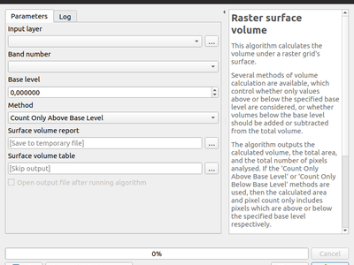
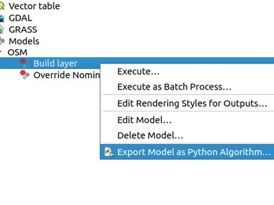
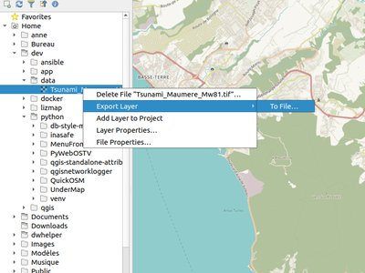

QGIS 3.6 pakeitimai¶

Geriausia visų laikų QGIS laida! Su QGIS 3.6 ateina didžiulis skaičius naujų pakeitimų - apie svarbiausius iš kurių parašysime čia. Kaip visada, mes primename, kad QGIS yra atviro kodo projektas, jei galite, apsvarstykite galimybę mus paremti per įnašus, rėmimą ar pagalbą dokumentuojant kodą, svetainę ir pan.
Padėkos
Mes norėtume padėkoti vystytojams, dokumentacijos rašytojams, testuotojams ir visiems kitiems, kurie savanoriškai skyrė laiką ir pastangas (arba skyrė lėšų, kad tai būtų padaryta). QGIS bendruomenė tikisi, kad jums patiks ši laida! Jei norite skirti laiko, pinigų ar kitaip prisidėti prie to, kad QGIS būtų dar puikesnis, prašome užsukti į qgis.org ir padėti!
QGIS palaiko rėmėjai. Dabartinių rėmėjų, daugiau ar mažiau prisidėjusių finansiškai prie projekto, sąrašą rasite :ref:`rėmėjų sąraše. Jei norėtumėte tapti oficialiu projekto rėmėju, prašome apsilankyti :ref:`mūsų rėmėjų puslapyje, kur rasite daugiau informacijos. QGIS parama leidžia mums finansuoti šešis mėnesinius vystytojų susitikimus, palaikyti projekto infrastruktūrą ir finansuoti klaidų taisymo pastangas. Pilną rėmėjų sąrašą rasite žemiau - mūsų pačios didžiausios padėkos visiems mūsų rėmėjams!
QGIS yra atvira programinė įranga ir jums jokiu būdu neprivalu mokėti norint ją naudoti. Priešingai, mes norime skatinti kiek galima daugiau žmonių naudoti ją nepriklausomai nuo jūsų finansinio ar visuomeninio statuso - mes tikime, kad duodant žmonėms įrankius, teikiančius galimybę daryti erdvinius sprendimus, galima sukurti geresnę visos žmonijos visuomenę.
- Žemėlapio įrankiai
- Savybė: Pavadinimo etiketės dekoracija
- Savybė: dekoracijos elementų centravimas viršuje/apačioje
- Savybė: viršūnės įrankio pataisymai ir patobulinimai
- Geoobjekto parinkimas („užrakinimas“) prieš keitimą
- Naujos viršūnės pridėjimas jos neperkeliant
- „Dabartinio sluoksnio“ režimas dabar yra numatytasis
- Savybė: trumpinti/išplėsti
- Savybė: stačiakampis pagal 3 taškus (projektuotas)
- Savybė: identifikavimo įrankis tinklelio sluoksniams
- Išraiškos
- Naudotojo sąsaja
- Simbologija
- Savybė: geresnis .XML stiliaus bibliotekų valdymas
- Savybė: pasirinktinai priversti naudoti dešinės rankos taisyklę poligono simbolių braižymui
- Savybė: parinktis paprastoms ir žymeklių linijoms braižyti tik išorinį arba tik vidinį žiedą.
- Savybė: rastro vaizdo žymeklis
- Savybė: rastro pildymas gali naudoti vaizdus iš nutolusio URL arba įterptus vaizdus
- Savybė: naudoti reprezentacijos reikšmes klasifikuotiems braižymams
- Savybė: galimybė sulieti kategorijas kategorizuotame braižyme
- Savybė: rodyti projekto spalvas su spalvomis susijusiuose priklausymo nuo duomenų mygtukuose
- Savybė: stiliaus tvarkyklės dialogo patobulinimai
- Savybė: SLD eksportas rastro stiliams
- Skaitmeninimas
- Duomenų valdymas
- Formos ir valdikliai
- Žemėlapio maketas
- Savybė: tinklelio rėmo patobulinimai
- Savybė: patobulintas teksto ir etikečių eksportas
- Savybė: žemėlapio etikečių patobulinimai
- Savybė: perdarytos elementų apimties/mastelio klavišų kombinacijos
- Savybė: išdėstymo elementai gali „blokuoti“ žemėlapio etiketes
- Savybė: įspėjimai eksportuojant
- Savybė: žemėlapio peržiūros apimčių pozicijos kontrolė
- Savybė: nauji išraiškų kintamieji legendos elementams
- Savybė: išraiškos legendos elemento teksto viduje
- Analizės įrankiai
- Apdorojimas
- Savybė: naujas algoritmas „išimti pasikartojimus pagal atributą“
- Savybė: HStore išskleidimo algoritmas
- Savybė: priverstinė dešinės rankos taisyklė
- Savybė: dvejetainio lauko ištraukimo algoritmas
- Savybė: linijų dalinimo pagal maksimalų ilgį algoritmas
- Savybė: naujas parametro tipas autentikacijos konfigūracijai
- Savybė: perrinkimo ir formatavimo parinktys gdaladdo algoritme
- Savybė: rastro zoninė statistikos algoritmas
- Savybė: Z ir M reikšmių ištraukimo algoritmai
- Savybė: geodezinio linijos dalinimo ties antimeridianu algoritmas
- Savybė: geodezinis režimas algoritmui „Jungti pagal linijas (Hub linijas)“
- Savybė: rastro paviršiaus apimties algoritmas
- Savybė: atgaivintas modelio į Pythono scenarijų funkcionalumas
- Programos ir projekto parinktys
- Naršyklė
- Savybė: rastro ir vektoriniams sluoksniams naršyklėje pridėta parinktis „eksportuoti į failą“
- Savybė: savos failo/aplanko savybės
- Savybė: sluoksnių ir atributų peržiūra
- Savybė: tirti naršyklėje QGS/QGZ projekto failus
- Savybė: tiesiogiai kurkite Geopackage ir Shape failus
- Savybė: atverti terminalą kelyje
- Bendra
- Duomenų tiekėjai
- Savybė: ArcGIS Feature Server sluoksnių atvira paslaugos info
- Savybė: OGR tiekėjų dvejetainio blob palaikymas
- Savybė: ArcGIS Feature Server piešinio žymeklio ir piešinio pildymo palaikymas
- Savybė: ArcGIS Feature Server etikečių palaikymas
- Savybė: loginių ir dvejetainių laukų palaikymas atminties sluoksniuose
- Savybė: GeoPackage JSON palaikymas
- Savybė: Postgres tiekėjas: įrašyti pirminio rakto pasirinkimą
- Savybė: ArcGIS Feature Server kelių laukų unikalių reikšmių palaikymas
- QGIS Serveris
- Priedai
- Programavimas
- Savybė: nauja klasė QgsExifTools
- Savybė: iteruoti per QgsGeometrijos dalis
- Savybė: patobulintas QgsLineString PyQGIS API
- Savybė: PyQGIS geometrijų rinkinių API patobulinimai
- Savybė: lengvesnis Apdorojimo algoritmų kūrimas su @alg dekoratoriumi
- Savybė: (ne-asinchroninių) tinklo užklausų blokavimas
- Savybė: savi tinkamumo tikrinimai eksportuojant sluoksnius
- Savybė: Geodezinių linijų skaičiavimo API
- Savybė: nauja klasė QgsQuadrilateral
- 3D savybės
- Svarbūs pataisymai
- Savybė: Alessandro Pasotti riktų pataisymai
- Savybė: Alexander Bruy riktų pataisymai
- Savybė: Jürgen Fischer ištaisyti riktai
- Feature: Bug fixes by Peter Petrik
- Feature: Bug fixes by Julien Cabieces
- Feature: Bug fixes by Loïc Bartoletti
- Feature: Bug fixes by Victor Olaya
- Feature: Bug fixes by Even Rouault
- Feature: Bug fixes by Martin Dobias
- Feature: Bug fixes by Nyall Dawson
- Savybė: Hugo Mercier riktų pataisymai
Žemėlapio įrankiai¶
Savybė: Pavadinimo etiketės dekoracija¶
Pridėta nauja dekoracija, leidžianti naudotojams greitai pridėti antraštę į drobę. Dekoracijoje yra fono juosta su keičiama spalva ir permatomumu.

Šią savybę sukūrė Mathieu Pellerin
Savybė: dekoracijos elementų centravimas viršuje/apačioje¶
Žemėlapio drobės autorių teisių ir naujai sukurta antraštės dekoracija dabar gali būti centruojama žemėlapio rodinio viršuje arba apačioje.
Šią savybę sukūrė Mathieu Pellerin
Savybė: viršūnės įrankio pataisymai ir patobulinimai¶
Pastaba: visi žemiau išvardinti punktai buvo įdiegti ir į LTR, taigi jie pasirodys ir 3.4.5.
Geoobjekto parinkimas („užrakinimas“) prieš keitimą¶
QGIS 2.18 jūs visada turėdavote pažymėti geoobjektą prieš jį keisdami. QGIS 3 tokio dalyko nebeliko - galima buvo bet kokiu metu keisti bet kurį geoobjektą. Dabar mes vėl pridėjome parinkimo („užrakinimo“) funkcionalumą - naudojant dešinį paspaudimą.
Ankstesnėse QGIS 3 versijose dešinys paspaudimas ant geoobjekto iššaukdavo nedidelį iššokantį meniu, kuris siūlydavo rodyti viršūnių redaktorių. Dabar dešinys paspaudimas ant geoobjekto iš karto parodys viršūnių redaktorių ir išjungs bet kurių kitų geoobjektų redagavimą.
Kai geoobjektas „užrakintas“, jį galima vėl atrakinti paspaudus ant jo arba paspaudus tuščioje vietoje - taip bus grąžintas numatytasis režimas, kai galima redaguoti kelis geoobjektus.
Kai pelės pozicijoje yra keli geoobjektai, pakartotinis dešinio mygtuko paspaudimas apeis juos ratu - su kiekvienu dešiniu paspaudimu bus užrakintas kitas geoobjektas. Galiausiai, kai visi geoobjektai bus pasiūlyti, nebus užrakintas joks geoobjektas, o tada ciklas prasidės iš naujo.
Užrakinimas galimas spaudžiant geoobjekto viršūnę, kraštą ar vidų (poligonams).
Naujos viršūnės pridėjimas jos neperkeliant¶
Dabar galima naudoti Shift + dvigubą paspaudimą, kad pridėtumėte naują viršūnę nepastūmę jos į naują vietą. Kartais tai naudinga, kai naudotojai nori pridėti papildomas viršūnes ant esamų segmentų.
„Dabartinio sluoksnio“ režimas dabar yra numatytasis¶
Iš dviejų viršūnių įrankių režimų, anksčiau numatytasis buvo „visi sluoksniai“. Pagal naudotojų komentarus taip nutinka rečiau, todėl naudotojai norėjo, kad numatytasis būtų „dabartinio sluoksnio“ režimas.
Šią savybę finansavo German QGIS user group
Šią savybę sukūrė Martin Dobias (Lutra Consulting)
Savybė: trumpinti/išplėsti¶
Priešingai nei kitoje programinėje įrangoje, įrankis leidžia jums keisti (multi)linijas IR (multi)poligonus. Dar daugiau, keisti galima ne tik linijų pabaigas, o bet kurią geometrijos vietą. Kitavertus dėl to gali atsirasti netinkamos geometrijos, o tai yra naudotojo atsakomybė.
Įrankis prašo jūsų parinkti ribą (segmentą), nuo kurios kitas segmentas bus praplečiamas ar trumpinamas. Priešingai nei viršūnės įrankyje, vykdomas tikrinimas, kad būtų keičiamas tik redaguojamas sluoksnis.
Kai abu segmentai yra 3D, įrankis vykdo ribojimo segmento interpoliaciją, kad grąžintų Z.
Trumpinimo atveju jums reikia paspaudimu parinkti dalį, kuri bus sutrumpinta.
Šią savybę finansavo Mairie de Megève
Šią savybę sukūrė Loïc Bartoletti (Oslandia)
Savybė: stačiakampis pagal 3 taškus (projektuotas)¶
Jau yra metodas stačiakampio kūrimui pagal 3 taškus, kur stačiakampis ima atstumą tarp pirmo ir antro taško, o antras ilgis yra lygus atstumui tarp 3io ir 2o taško.
Šis naujas metodas leidžia kurti stačiakampį pagal 3 taškus, kur antras ilgis yra atstumas tarp taško, ir taško projektuoto statmenai segmente (arba jo praplėtime).
Šią savybę sukūrė Loïc Bartoletti (Oslandia)
Savybė: identifikavimo įrankis tinklelio sluoksniams¶
Identifikavimo įrankis dabar veikia ir tinklelio sluoksnyje. Jis rodo reikšmę tinklelio skaliaro ir vektoriaus komponentų reikšmes dabartiniu metu.

Šią savybę finansavo Lutra Consulting
Šią savybę sukūrė Peter Petrik (Lutra Consulting)
Išraiškos¶
Savybė: naujos išraiškų funkcijos¶
force_rhr: priverčia poligonus laikytis dešinės rankos taisyklės, kuri nurodo, kad poligono plotas yra dešinėje ribos pusėje. T.y. išorinis žiedas orientuotas pagal laikrodžio rodyklę, o vidinis - prieš laikrodžio rodyklę.decode_uri: ima sluoksnio parametrą ir neprivalomą uri dalies parametrą. Tada grąžina informaciją apie sluoksnio duomenų šaltinį. Gaunama informacija priklauso nuo duomenų tiekėjo. Jei kviečiama tik su vienu parametru, bus grąžinamas masyvas su visa prieinama informacija. Jei nurodyta ir dalis, iš masyvo bus grąžinama tik paprašyta dalis.pathpridėta kaip parinktis išraiškos funkcijojelayer_propertyarray_sort: rikiuoja masyvo elementusnullif- sqlite_fetch_and_increment
make_rectangle_3points: Kurti stačiakampį iš 3 taškų. Yra du variantai sukurti stačiakampį pagal atstumą arba pagal projekciją. Atstumo variantas: antras atstumas lygus atstumui tarp 2o ir 3io taško. Projekcijos variantas: antras atstumas yra lygus atstumai iš statmenos 3 taško projekcijos segmente arba jo tęsinyje.make_square: Kuria kvadratą iš įstrižainės.- from_json
- to_json
Savybė: laužtiniai skliaustai lengvam priėjimui prie masyvo elementų¶
Leidžiamos tokios išraiškos:
- array(1,2,3)[0] -> 1
- array(1,2,3)[2] -> 3
- array(1,2,3)[-1] -> 3 (Python stilius, negatyvi reikšmė reikia skaičiavimą nuo masyvo pabaigos)
- array(1,2,3)[-3] -> 1
- map(‚a‘,1,‘b‘,2)[‚a‘] -> 1
- map(‚a‘,1,‘b‘,2)[‚b‘] -> 2
Šią savybę sukūrė Nyall Dawson, Mathieu Pellerin
Savybė: nauji masyvų išraiškų kintamieji¶
- @map_crs_description: žemėlapio koordinačių atskaitos sistemos pavadinimas.
- @map_crs_acronym: žemėlapio koordinačių atskaitos sistemos akronimas.
- @map_ellipsoid_acr: žemėlapio koordinačių atskaitos sistemos elipsoido akronimas.
- @map_crs_proj4: koordinačių atskaitos sistemos Proj4 apibrėžimas.
- @map_crs_wkt: WKT definition of the coordinate reference system.
Šią savybę sukūrė Alexis Roy-Lizotte
Savybė: nauja try() funkcija klaidų gaudymui¶
Nauja try() funkcija bando išraišką ir grąžina jos reikšmę jei neįvyko klaida. Jei išraiška grąžina klaidą, grąžinama alternatyvi reikšmė, jei ji pateikta, jei ne - grąžinamas null.
Šią savybę sukūrė Mathieu Pellerin
Naudotojo sąsaja¶
Savybė: nauja pilka tema: „Blend of Gray“¶
QGIS atsirado visiškai nauja tema, pavadinta „Blend of Gray“. Taipogi šimtai pataisymų ir patobulinimų buvo atlikti esamai temai „Night Mapping“.

Šią savybę sukūrė Mathieu Pellerin
Savybė: kelių eilučių pažymėjimas ir redagavimas kodo/išraiškų redaktoriuose¶
Laikant ctrl kol žymima QGIS išraiškų ir Python skriptų redaktoriuose leidžia pažymėti kelių eilučių teksto bloką, kuris gali būti keičiamas vienu metu.
This feature was developed by Nyall Dawson ()
Simbologija¶
Savybė: geresnis .XML stiliaus bibliotekų valdymas¶
Naršyklės skydelis dabar rodo QGIS stiliaus xml bibliotekas ir šiuos failus galima tempti ir numesti į QGIS langą. Taip atveriamas dialogas, leidžiantis naudotojams tyrinėti stiliaus biblioteką, importuoti stilius iš bibliotekos į QGIS.
This feature was funded by North Road
This feature was developed by Nyall Dawson (North Road)
Savybė: pasirinktinai priversti naudoti dešinės rankos taisyklę poligono simbolių braižymui¶
Ši nauja parinktis pasiekiama per pildymo simbolių mygtuką „Sudėtingesni“. Ji leidžia priversti poligonų braižymą vykdyti pagal standartinę „dešinės rankos“ taisyklę žiedų orientacijai (kur išoriniai žiedai eina pagal laikrodžio rodyklę, o vidiniai - prieš laikrodžio rodyklę).
Orientacija pataisoma tik braižant, pradinė geoobjekto geometrija nekeičiama.
Tai leidžia kurti pildymo simbolius su pastovia išvaizda, nepriklausomai nuo to, kokią geoobjektų orientaciją turi braižomas duomenų rinkinys.
Šią savybę finansavo QGIS Vokietijos naudotojų grupė
Šią savybę sukūrė Nyall Dawson (North Road)
Savybė: parinktis paprastoms ir žymeklių linijoms braižyti tik išorinį arba tik vidinį žiedą.¶
Ši nauja parinktis rodoma kai paprastas linijos simbolis ar žymeklių linijos simbolis naudojamas kaip poligonų pildymo braižymo dalis. Numatytoji elgsena yra braižyti ir vidinius ir išorinius žiedus, bet šis naujas nustatymas leidžia naudotojams nustatyti simbolių sluoksnių braižymą tik išoriniams ARBA tik vidiniams žiedams. Tai leidžia simbolizaciją, kuri anksčiau nebuvo galima, tokią kaip žymeklių liniją su žymekliais vidiniams žiedams pakreiptais link poligono vidaus.
Šią savybę finansavo QGIS Vokietijos naudotojų grupė
Šią savybę sukūrė Nyall Dawson (North Road)
Savybė: rastro vaizdo žymeklis¶
QGIS pridėtas naujas rastro vaizdo žymeklio simbologijos tipas, leidžiantis naudotojams naudoti rastrą, t.y. piešinio failą kaip žymeklį. Rastro vaizdo žymeklio simbologija leidžia keisti plotį, aukštį, dydį, pasukimą ir permatomumą.
Naudojant nuo duomenų priklausomą vaizdo šaltinį, ši nauja simbologija leidžia puikiai rodyti geopririštas nuotraukas žemėlapio drobėje.

Šią savybę sukūrė Mathieu Pellerin
Savybė: rastro pildymas gali naudoti vaizdus iš nutolusio URL arba įterptus vaizdus¶
Kaip ir SVG, rastro vaizdo žymekliai, rastro pildymas dabar gali naudoti HTTP URL arba failus įdėti tiesiai į simbolį.
Šią savybę sukūrė Mathieu Pellerin
Savybė: naudoti reprezentacijos reikšmes klasifikuotiems braižymams¶
Kai laukas sukonfigūruotas su reikšmės ryšiu, reikšmių žemėlapis arba kita „reprezentuojanti reikšmė“ ir laukas naudojami kaip šaltinis klasifikuotiems braižymams, reprezentuojamos reikšmės bus naudojamos kategorijų pavadinimams.
Šią savybę sukūrė Matthias Kuhn
Savybė: galimybė sulieti kategorijas kategorizuotame braižyme¶
Šis pakeitimas leidžia naudotojams pažymėti kelias esamas kategorijas ir sugrupuoti jas į vieną kategoriją, kuri taikoma bet kuriai iš pažymėjimo reikšmių.
Taip paprasčiau kurti sluoksnių stilius turint daug kategorijų, kur galima grupuoti daug atskirų kategorijų į mažesnę, geriau valdomą aibe kategorijų, kurioms taikomos kelios reikšmės.
Ši parinktis prieinama iš kontekstinio meniu, paspaudus dešinį pelės mygtuką kategorijų rodinyje, kai pažymėtos kelios kategorijos.

Šią savybę finansavo SMEC/SJ
This feature was developed by Nyall Dawson (North Road)
Savybė: rodyti projekto spalvas su spalvomis susijusiuose priklausymo nuo duomenų mygtukuose¶
Priklausymo nuo duomenų mygtukuose, kurie susiję su spalvomis, pridėta nauja skiltis „Projekto spalvos“. Spalvų meniu yra visos spalvos, apibrėžtos kaip dabartinio projekto spalvų schema (kuri apibrėžiama projekto savybėse).
Kai projekto spalva parenkama per mygtuką, savybė susiejama su spalva. Ji automatiškai seks visus spalvos pakeitimus projekto nustatymuose.
Taip naudotojai gali vieną kartą apibrėžti projekto spalvas, o tada susieti simbolių, etikečių, išdėstymo ir pan. spalvas su šiomis iš anksto apibrėžtomis spalvomis. Ryšys yra gyvas, taigi pakeičiate vieną kartą, ir pakeitimas atsispindi VISUR. Taip daug lengviau nei 100 kartų keisti spalvą, kai jos panaudojimas išmėtytas projekto simboliuose, etiketėse ir pan…
This feature was funded by North Road
This feature was developed by Nyall Dawson (North Road)
Savybė: stiliaus tvarkyklės dialogo patobulinimai¶
Stiliaus tvarkyklės dialoge atlikti tokie patobulinimai:
- Pridėtas naujas „sąrašo rodinio“ režimas
- Pridėta kortelė „Visi“, kurioje rodomi visi atitinkantys simboliai (nepriklausomai nuo simbolio tipo)
This feature was developed by Nyall Dawson (North Road)
Savybė: SLD eksportas rastro stiliams¶
QGIS dabar gali eksportuoti rastro stilių į SLD, pavyzdžiui naudojimui Geoserveryje. Žiūrėkite: https://docs.geoserver.org/latest/en/user/styling/qgis/index.html#exporting-raster-symbology

Šią savybę finansavo OSGeo UK, GeoServer PSC, Brad Hards
Šią savybę sukūrė Luigi Pirelli and GeoSolutions
Skaitmeninimas¶
Savybė: geo-koordinavimo patobulinimai¶
- prie GCP taškų pridėti dX, dY ir likučiai
- pridėta parinktis automatiškai įrašyti GCP taškus į rastro-modifikuotą kelią

Šią savybę sukūrė Faneva Andriamiadantsoa
Savybė: nauja parinktis vengti geo-koordinavimo minimizavimo pridedant taškus¶
Naudotojai dabar gali pasirinkti vengti automatinio geo-koordinavimo lango minimizavimo, kuris įvyksta pridedant naujus kontrolinius taškus į žemėlapio drobę. Ši elgsena gali nepatikti turint kelis vaizduoklius, kur norima turėti abu langus matomus pridedant taškus.
This feature was developed by Nyall Dawson (North Road)
Duomenų valdymas¶
Savybė: DB tvarkytojo komentarų parinktis¶
Šią savybę sukūrė Corentin Falcone (SIRS)
Formos ir valdikliai¶
Savybė: naujas formų valdiklis dvejetainiams (blob) laukams¶
Šis valdiklis tinka tik dvejetainiams laukams (ir yra numatytasis dvejetainių laukų valdiklis). Jis leidžia rodyti etiketėmis rodyti, ar blob tušias, ar ne, ir jei netuščias - rodyti turinio dydį (baitais/kb/ir pan.).
Iškrentančio meniu mygtukas leidžia naudotojams įrašyti dabartinį dvejetainį lauko turinį į failą diske, išvalyti blob lauko turinį arba įterpti dvejetainį turinį parenkant failą iš sistemos.
Šią savybę finansavo SMEC/SJ
This feature was developed by Nyall Dawson (North Road)
Žemėlapio maketas¶
Savybė: tinklelio rėmo patobulinimai¶
Naudotojai dabar gali nurodyti tinklelio rėmo paraštę žemėlapio išdėstymo elementams. Taipogi pridėti nauji rėmo stiliai „Zebra (Jūrinis)“ ir „Linijos rėmas (Jūrinis)“, kurie rodo jūrinio stiliaus blokus tinklelio kampuose, kai tinkleliui nurodyta paraštė.
Šią savybę sukūrė konst
Savybė: patobulintas teksto ir etikečių eksportas¶
Eksportuojant spausdinimo išdėstymą į PDF ar SVG formatus, naudotojai dabar turi galimybę pasirinkti, kaip eksportuojamas išdėstymo tekstas ir etiketės. Galimi variantai yra konvertuoti visą tekstą į kontūrus/kreives (ankstesnė numatytoji parinktis) arba palikti tekstus ir etiketes kaip tekstinius objektus.
This feature was developed by Nyall Dawson (North Road)
Savybė: žemėlapio etikečių patobulinimai¶
Padaryti keli etikečių braižymo tarp žemėlapio išdėstymo elementų patobulinimai.
- Naujas nustatymas leidžia žemėlapio kontekste nurodyti, kaip arti etiketės gali būti prie žemėlapio elementų kraštų. Dydžiai gali būti nurodomi mm/coliais/taškais/kt. Taipogi leidžiamos nuo duomenų priklausomos paraštės.
- Naujas nustatymas leidžia žemėlapio kontekste valdyti, ar dalinės etiketės matomos žemėlapyje. Numatytoji parinktis yra nerodyti (priešingai nei drobės nustatymuose, kur numatytoji naujo projekto reikšmė yra rodyti), nes išdėstymai pagal nutylėjimą visada turėtų kurti aukščiausios kokybės kartografinį rezultatą.
This feature was funded by North Road
This feature was developed by Nyall Dawson (North Road)
Savybė: perdarytos elementų apimties/mastelio klavišų kombinacijos¶
Mygtukai, pritaikantys išdėstymo žemėlapio elementus taip, kad jie atitiktų dabartinį žemėlapio rodinį (ir atvirkščiai) buvo perkelti aukščiau į naują įrankinę žemėlapio elementų savybių languose.
Taipogi buvo pridėti nauji veiksmai, leidžiantis nustatyti žemėlapio elemento mastelį pagal pagrindinės drobės mastelį ir nustatyti pagrindinės drobės mastelį pagal parinkto išdėstymo žemėlapio mastelį. Jie atitinka dabartinius nustatymus nustatant apimtį iš drobės ir perduodant apimtį į drobę.
This feature was funded by North Road
This feature was developed by Nyall Dawson (North Road)
Savybė: išdėstymo elementai gali „blokuoti“ žemėlapio etiketes¶
Ši savybė leidžia kitus išdėstymo elementus (tokius kaip mastelio juosta, šiaurės rodyklė, vidiniai žemėlapiai ir pan.) pažymėti kaip žemėlapio elementų „blokuotojus“. Taip jokia žemėlapio etiketė nebus braižoma po šiais elementais - etikečių variklis bandys arba kitą vietą arba apskritai jų nebraižys.
Tai leidžia kurti kartografiškai malonesnius žemėlapius - etiketes po kitais elementais gali būti sunku skaityti, o be šio naujo nustatymo buvo netrivialu padaryti, kad QGIS vengtų dėti etiketes šiose painiose vietose.
Elementų blokavimas nustatomas per žemėlapio elemento savybes, etikečių nustatymų skydelyje. Nustatymai yra žemėlapio elementui, taigi galite padaryti, kad mastelis blokuoja etiketes viename išdėstymo žemėlapyje, bet ne kituose (jei to norite!)
This feature was funded by North Road
This feature was developed by Nyall Dawson (North Road)
Savybė: įspėjimai eksportuojant¶
Eksportuojant spausdinimo išdėstymus, QGIS dabar automatiškai patikrina, ar išdėstyme nėra populiarių klaidų ir įspėja naudotojus, jei jos randamos.
- Masteliai nesusieti su žemėlapio elementu
- Piešinio elementai sugadinti arba trūksta kelių, arba susieti su neperskaitomais piešinių failais
- Žemėlapio peržiūros daugiau nebesusietos su tinkamu žemėlapio elementu
Šią savybę finansavo SMEC/SJ
This feature was developed by Nyall Dawson (North Road)
Savybė: žemėlapio peržiūros apimčių pozicijos kontrolė¶
QGIS leidžia braižyti peržiūros apimtis braižyti po žemėlapio etiketėmis (nauja numatytoji parinktis), bet 3.6 versijoje pridėtas pasirinkimas braižyti juos po visais žemėlapio sluoksniais arba virš/po konkrečiu žemėlapio sluoksniu. Tai leidžia naudotojams tiksliai valdyti, kur žemėlapio elementų sluoksniuose bus rodoma peržiūra, pavyzdžiui leidžiama braižyti peržiūros apimtį po kai kuriais geoobjektų sluoksniais, tokiais kaip keliai, bet virš kitų foninių sluoksnių.
This feature was developed by Nyall Dawson (North Road)
Savybė: nauji išraiškų kintamieji legendos elementams¶
Pridėti nauji išraiškų kintamieji, kuriuos galima naudoti nuo duomenų priklausančiose išraiškose išdėstymo legendos elementams:
- @legend_title
- @legend_column_count
- @legend_split_layers
- @legend_wrap_string
- @legend_filter_by_map
- @legend_filter_out_atlas
Jei legenda susieta su žemėlapiu, tai toje legendoje naudojamos išraiškos turės prieiga prie susietų kintamųjų, tokių kaip @map_scale, @map_extent ir t.t.
Taipogi simboliai, kurie braižomi kaip legendos dalis, dabar naudoja visą prieinama legendų išraiškų kontekstą. Tai reiškia, kad simboliai turi prieiga prie kintamųjų, tokių kaip dabartinis atlaso geoobjektas.
Šią savybę sukūrė Alexis Roy-Lizotte
Savybė: išraiškos legendos elemento teksto viduje¶
Ši savybė leidžia įterpti išraiškas tiesiai į legendos elemento tekstą (pvz. grupės, pogrupio ar elemento tekstą). Išraiškos įvertinamos braižymo metu, pilnai žinant legendos išraiškų kontekstą (taigi gali naudoti kintamuosius iš išdėstymo/išdėstymo elementų/ir pan.)
Šitai dar neturi UI (bus padaryta 3.8), bet išraiškos įvedamos naudojant standartinį formatą [% 1 + 2 %].
Pavyzdžiui legendos elemento tekstas
My layer (rendered at 1:[% @map_scale %])
bus rodomas kaip
My layer (rendered at 1:1000)
This feature was developed by Nyall Dawson (North Road)
Analizės įrankiai¶
Savybė: rastro skaičiuotuvo aparatinis greitinimas¶
Rastro skaičiuotuvo veiksmams dabar pagal nutylėjimą prieinamas OpenCL greitinimas.
Šią savybę finansavo Alessandro Pasotti - ItOpen
Šią savybę sukūrė Alessandro Pasotti
Savybė: tinklelio skaičiuotuvas¶
Similar to raster calculator, mesh calculator works on mesh layers. In addition to the general functions, mesh calculator also provides time aggregate functions. For example, if you have a netcdf with daily temperature over a month, you can calculate the average temperature for the whole month for each cell. The output can be filtered by time span or spatial extent.
Šią savybę finansavo Lutra Consulting
Šią savybę sukūrė Peter Petrik (Lutra Consulting)
Apdorojimas¶
Savybė: naujas algoritmas „išimti pasikartojimus pagal atributą“¶
Leidžia išimti pasikartojančius geoobjektus, identifikuojamus naudojant reikšmes vieno (ar daugiau) laukų reikšmių iš įvesties geoobjektų. Pasirinktinai visi išmesti (pasikartojantys) geoobjektai gali būti įrašyti į atskirą vietą.

Šią savybę finansavo SMEC/SJ
This feature was developed by Nyall Dawson (North Road)
Savybė: HStore išskleidimo algoritmas¶
Šis algoritmas sukuria įvesties sluoksnio kopiją ir prideda po naują lauką kiekvienam unikaliam raktui, randamam HStore tipo lauke. Pavyzdžiui HStore laukas dažnai naudojamas OSM duomenų rinkinyje („other_tags“).

Šią savybę sukūrė Etienne Trimaille
Savybė: priverstinė dešinės rankos taisyklė¶
Šis naujas algoritmas priverčia poligonų geometriją paklusti dešinės rankos taisyklei, kuri nurodo, kad plotą apibrėžiantis poligonas yra ribos dešinėje. Taigi išorinis žiedas orientuojamas pagal laikrodžio rodyklę, o vidiniai žiedai - prieš laikrodžio rodyklę.

Šią savybę finansavo QGIS Vokietijos naudotojų grupė
This feature was developed by Nyall Dawson (North Road)
Savybė: dvejetainio lauko ištraukimo algoritmas¶
Šis naujas algoritmas leidžia naudotojams ištraukti dvejetainių laukų turinį į failus.

Šią savybę finansavo SMEC/SJ
This feature was developed by Nyall Dawson (North Road)
Savybė: linijų dalinimo pagal maksimalų ilgį algoritmas¶
Šis algoritmas ima įvesties (multi)linijų (arba kreivių) sluoksnį ir padalina kiekvieną geoobjektą į kelias dalis taip, kad nei viena jų nebūtų ilgesnė nei nurodytas maksimalus ilgis.
Palaiko nuo duomenų priklausančia maksimalaus ilgio savybę ir redagavimo vietoje veiksmą.

Šią savybę sukūrė Nyall Dawson, Nathan Woodrow
Savybė: naujas parametro tipas autentikacijos konfigūracijai¶
Buvo pridėtas naujas parametro tipas apdorojimo algoritmams, QgsProcessingParameterAuthConfig, kuris leidžia pasirinkti iš galimų autentikacijos konfigūracijų (ir kurti naujas).
Leidžia kurti apdorojimo algoritmus, kurie gali pilnai pasinaudoti QGIS išmaniu autentikavimo apdorojimui, išvengiant poreikio naudoti nesaugius tekstinius parametrus naudotojų jautrių prisijungimo duomenų įvedimui.
QgsProcessingParameterAuthConfig parametrai įvertinami naudojant QgsProcessingAlgorithm.parameterAsString(), kuris grąžina pažymėtos konfigūracijos ID.
Šią savybę finansavo SMEC/SJ
This feature was developed by Nyall Dawson (North Road)
Savybė: perrinkimo ir formatavimo parinktys gdaladdo algoritme¶
Šią savybę sukūrė Alex Bruy
Savybė: rastro zoninė statistikos algoritmas¶
Šis algoritmas skaičiuoja rastro sluoksnio reikšmių statistiką, kategorizuotą zonomis, apibrėžtomis kitame rastro sluoksnyje.

This feature was developed by Nyall Dawson (North Road)
Savybė: Z ir M reikšmių ištraukimo algoritmai¶
Šie algoritmai leidžia naudotojams konvertuoti geoobjektuose esančias z ar m reikšmes į sluoksnio atributus.
Pagal nutylėjimą ištraukiamos z/m reikšmės iš pirmos geoobjekto viršūnės, bet pasirinktinai statistika gali būti skaičiuojama pagal VISAS geometrijos z/m reikšmes (pvz. skaičiuojant vidutines/min/maks/sumines/kitas z reikšmes).
This feature was developed by Nyall Dawson (North Road)
Savybė: geodezinio linijos dalinimo ties antimeridianu algoritmas¶
Šis algoritmas dalina liniją į kelis geodezinius segmentus, kai linija kerta antimeridianą (±180 laipsnių ilgumos). Dalinimas ties antimeridianu padeda vaizduoti linijas kai kuriose projekcijose. Grąžinama geometrija visada bus kelių dalių geometrija.
Kai įvesties geometrijos segmentai kerta antimeridianą, jie bus padalinti į du segmentus, kurių platuma kirtimo tašku bus nustatoma naudojant geodezines linijas, jungiančias taškus abiejose šio segmento pusėse. Dabartinis projekto elipsoido nustatymas bus naudojamas skaičiuojant šį kirtimo tašką.
Jei įvesties geometrijoje yra M ar Z reikšmės, jos bus tiesiškai interpoliuotos naujai sukurtoms viršūnėms antimeridiane.
Taipogi palaiko keitimą vietoje.
This feature was developed by Nyall Dawson (North Road)
Savybė: geodezinis režimas algoritmui „Jungti pagal linijas (Hub linijas)“¶
Tai leidžia pasirinktinai kurti geodezines linijas, kurios reprezentuoja trumpiausią atstumą tarp taškų pagal elipsoidą.
Kai naudojamas geodezinis režimas, galima dalinti sukurtas linijas ties antimeridianu (±180 laipsnių ilgumos), o tai gali pagerinti linijų braižymą. Taipogi gali būti nurodomas atstumas tarp viršūnių. Mažesnis atstumas reiškia tankesnę, tikslesnę liniją.
This feature was developed by Nyall Dawson (North Road)
Savybė: rastro paviršiaus apimties algoritmas¶
SAGA rastro paviršiaus apimties skaičiavimas buvo perkeltas į QGIS algoritmus. Šio algoritmo SAGA versija buvo ribota QGIS’e, nes paskaičiuota apimtis buvo matoma tik SAGA terminalo išvestyje. Dėl to nebuvo galima jos įrašyti į failą arba panaudoti modelyje kaip įvestį kitame žingsnyje. Taipogi algoritmas buvo perkeltas į vidinį QGIS c++ algoritmą. Algoritmas atkartoja SAGA algoritmą 1:1, bet išveda apimtį (ir plotą) arba į HTML ataskaitą, arba į vektorinę lentelę. Papildomai išvestys gali būti eksportuojamos į skaitmeninius formatus iš algoritmo, leidžiant juos pakartotinai panaudoti modeliuose.

This feature was developed by Nyall Dawson (North Road)
Savybė: atgaivintas modelio į Pythono scenarijų funkcionalumas¶
2.x galimybė tiesiogiai konvertuoti apdorojimo modelį į atitinkamą Python skriptą buvo atgaivinta ir atnaujinta 3.x apdorojimo API.

Šią savybę finansavo Solspec
This feature was developed by Nyall Dawson (North Road)
Programos ir projekto parinktys¶
Savybė: trinti nustatymus iš parinkčių kortelės „Sudėtingesni“¶
Šis pakeitimas pridėjo naują dešinio paspaudimo meniu nustatymuose, rodomuose parinkčių dialogo kortelėje „Sudėtingesni“. Tai leidžia naudotojui pašalinti nustatymus (arba nustatymų grupes).

This feature was funded by North Road
This feature was developed by Nyall Dawson (North Road)
Naršyklė¶
Savybė: rastro ir vektoriniams sluoksniams naršyklėje pridėta parinktis „eksportuoti į failą“¶
Leidžia tiesiogiai eksportuoti šiuos failus (pvz. į kitą formatą, crs ir pan.) be poreikio juos iš pradžių įkelti į projektą.

This feature was funded by Nyall Dawson (North Road)
This feature was developed by Nyall Dawson (North Road)
Savybė: savos failo/aplanko savybės¶
Dabar galite naršyklėje spausti dešinį pelės mygtuką ant failo ar aplanko ir parinkti „Failo savybės“ ar „Aplanko savybės“, kad atvertumėte savą failo/aplanko savybių dialogą. Taip galima greičiau prieiti prie operacinės sistemos failo ar aplanko savybių, tokių kaip failų prieigos teisių ar dalinimosi parinkčių.
This feature was funded by North Road
This feature was developed by Nyall Dawson (North Road)
Savybė: sluoksnių ir atributų peržiūra¶
QGIS 3.6 grąžina 2.18 versijoje buvusios atskiros „naršyklės“ aplikacijos funkcionalumą peržiūrėti sluoksnius ir jų atributus. Šis funkcionalumas buvo perkeltas į vidinį naršyklės skydelį ir pasiekiamas paspaudus dešinį mygtuką ant sluoksnio ir parinkus „Sluoksnio savybės“ (arba paspaudus mygtuką „įjungti/išjungti savybių valdiklį“ naršyklės įrankinėje).

Šią savybę finansavo SMEC/SJ
This feature was developed by Nyall Dawson (North Road)
Savybė: tirti naršyklėje QGS/QGZ projekto failus¶
Senesnės QGIS versijos QGS/QGZ projekto failus rodė naršyklėje, leido juos atidaryti kaip naujus aktyvius projektus. QGIS 3.6 šis funkcionalumas buvo išplėstas, dabar projekto failus galima tirti tiesiai naršyklės VIDUJE. Projektai dabar yra išskleidžiami elementai, kurios išskleidus matoma visa projekto grupių ir sluoksnių struktūra. Bet kurį sluoksnį dabar galima tempti ir numesti į dabartinį projektą.
This feature was funded by North Road
This feature was developed by Nyall Dawson (North Road)
Savybė: tiesiogiai kurkite Geopackage ir Shape failus¶
Naršyklės skydelyje ant aplanko paspaudus dešinį mygtuką parodomas meniu „Naujas“, kuriame yra elementai kurti naują Geopackage ar Shape failą arba paaplankį.

This feature was funded by North Road
This feature was developed by Nyall Dawson (North Road)
Savybė: atverti terminalą kelyje¶
Naršyklės skydelio aplankams pridėtas naujas kontekstinis meniu, kuris atidaro naują terminalo langą pažymėtame aplanke.
Windows šis terminalas paveldi QGIS aplinką, taigi GDAL komandos ir Python scenarijai, kurie naudoja PyQGIS komandas, veikia be jokių papildomų nustatymų.
Džiūgaukite, terminalo programišiai!

This feature was developed by Nyall Dawson (North Road)
Bendra¶
Savybė: pagerintas „trūkstamų sluoksnių“ apdorojimas įkeliant projektą¶

Šią savybę finansavo A.R.P.A. Piemonte
Šią savybę sukūrė Alessandro Pasotti
Savybė: pasirinktinis nustatymas versijos tikrinimo išjungimui¶
QGIS konfigūracijos ini faile pridėtas naujas nustatymas „allowVersionCheck“. Nustačius true (numatytoji reikšmė), naudotojai per QGIS nustatymų dialogą gali nurodyti, ar versijos tikrinimas įjungtas ar išjungtas. Nustačius šio nustatymo reikšmę false, versijos tikrinimas nebus atliekamas IR naudotojai NEGALĖS pasirinkti įjungti šį tikrinimą nustatymų dialoge.
Šis nustatymas skirtas naudojimui didelėse įmonėse, kur QGIS versijos tvarkomos centralizuotai.
Šią savybę finansavo SMEC/SJ
This feature was developed by Nyall Dawson (North Road)
Savybė: vektorinio sluoksnio legendos elementams pridėtas perjungimo veiksmas¶

Šią savybę finansavo A.R.P.A. Piemonte
Šią savybę sukūrė Alessandro Pasotti
Duomenų tiekėjai¶
Savybė: ArcGIS Feature Server sluoksnių atvira paslaugos info¶
ArcGIS Feature Server sluoksniai turi naują dešinio mygtuko paspaudimo parinktį naršyklės skydelyje, kuri leidžia tiesiogiai atverti parinkto sluoksnio paslaugos informacijos puslapį.
Šią savybę finansavo SMEC/SJ
This feature was developed by Nyall Dawson (North Road)
Savybė: OGR tiekėjų dvejetainio blob palaikymas¶
Vietoje to, kad kapoti dvejetainius laukus į eilutes, šios reikšmės dabar ištraukiamos kaip jų pradinis dvejetainis turinys. Tai leidžia priedams ir scenarijams naudoti dvejetainius laukus, pavyzdžiui ištraukti jų turinį.
Be to, nauji dvejetainiai laukai gali būti kuriami suderinamuose duomenų šaltiniuose.
Šią savybę finansavo SMEC/SJ
This feature was developed by Nyall Dawson (North Road)
Savybė: ArcGIS Feature Server piešinio žymeklio ir piešinio pildymo palaikymas¶
Įkeliant Feature Server sluoksnį su piešinio žymekliais ar piešinio pildymo simbologija, QGIS automatiškai konvertuos ESRI piešinio žymeklio ir pildymo simbolius ir naudos juos kaip sluoksnio stilių pagal nutylėjimą.
Šią savybę finansavo SMEC/SJ
Šią savybę sukūrė Nyall Dawson, Mathieu Pellerin
Savybė: ArcGIS Feature Server etikečių palaikymas¶
Kai Feature Server sluoksnis turi serveryje nurodytas etiketes, šie etikečių nustatymai bus automatiškai naudojami įkeliant sluoksnį į QGIS.
Šią savybę sukūrė Mathieu Pellerin
Savybė: loginių ir dvejetainių laukų palaikymas atminties sluoksniuose¶
Atminties („Laikini juodraštiniai“) sluoksniai dabar gali naudoti dvejetainius ir loginius (true/false) laukų tipus.
This feature was funded by North Road
This feature was developed by Nyall Dawson (North Road)
Savybė: GeoPackage JSON palaikymas¶
JSON palaikymas leidžia laikyti struktūrinius duomenis viename GeoPackage failo lauke.
Duomenys, kurie saugomi kaip JSON, gali būti reprezentuojami ir keičiami
- ValueRelation valdikliuose įjungus leidimą žymėti kelis
- KeyValue valdikliuose
- Sąrašo widgets
- arba QML valdiklyje, kuris taipogi palaiko JSON duomenų vaizdavimą
Šią savybę finansavo Kanton Zug, Amt für Geoinformation
Šią savybę sukūrė David Signer (OPENGIS.ch)
Savybė: Postgres tiekėjas: įrašyti pirminio rakto pasirinkimą¶
Kai rodinys įkeliamas iš Duomenų Šaltinių Tvarkyklės PostgreSQL kortelės, jūs galite parinkti raktinius rodinio stulpelius (pagal nutylėjimą naudojamas pirmas laukas, o tai gali būti klaidinga). Šis pakeitimas atsimena pasirinkimą nustatymuose, kad kitą kartą nereikėtų pasirinkinėti iš naujo. Įrašyta sekcija taipogi naudojama pridedant per naršyklę.
Šią savybę sukūrė Jürgen Fischer
Savybė: ArcGIS Feature Server kelių laukų unikalių reikšmių palaikymas¶
QGIS dabar gali rodyti braižymo nustatymus Feature Serverio sluoksnio, turinčio kelių laukų unikalias reikšmes.
Šią savybę sukūrė Mathieu Pellerin
QGIS Serveris¶
Savybė: galimybė nustatyti ATLAS_PK GetPrint užklausoje, kad būtų spausdinamas atlaso lapas(-ai)¶
Naujas GetPrint parametras priima pirminį raktą(us), nurodantį, atskyrus kableliais, kuriuos atlaso lapus reikia spausdinti.
Tokia užklausa atrodys daugmaž taip:
https://yourserver.name/path/to/qgisproject?SERVICE=WMS&REQUEST=GetPrint
&TEMPLATE=A4&FORMAT=pdf&ATLAS_PK=1,3,7
ATLAS_PK taipogi galima nurodyti žvaigždutę (*), kad būtų paprašyta visų atlaso geoobjektų. Kad serveris būtų apsaugotas nuo per didelių užklausų, galima apriboti iki nurodyto maksimalaus geoobjektų skaičiaus, kurių galima užklausti vienu metu (žiūrėkite prisegtą nuotrauką).
Kadangi klientai gali nežinoti, kuris šablonas turi atlasą ir kurie atributai yra padengimo sluoksnio pirminiai raktai, ši nauja savybė taipogi prideda šią informaciją į WMS paslaugos GetProjectSetting atsakymą.

Šią savybę finansavo Kanton Zug, Amt für Geoinformation
Šią savybę sukūrė Marco Hugentobler
Savybė: WMTS kaladėlių matricų konfigūracija¶
QGIS Serveryje 3.4 buvo pridėtas WMTS API, kuris skaičiuoja kaladėlių matricas, bet ne EPSG:3857 ir EPSG:4326.
Šis pakeitimas prideda galimybę parinkti kaladėlių matricas, kurios bus naudojamos projekte ir sukonfigūruoti viršutinį dešinį kampą ir paskutinį kaladėlių matricos lygį. EPSG:3857 ir EPSG:4326 naudotojas gali pasirinkti tik paskutinį kaladėlių matricos lygį.
Šią savybę finansavo Ifremer
Šią savybę sukūrė 3liz
Savybė: Prie WMS GetFeatureInfo užklausos pridėtas JSON formatas¶
Šios naujos savybės dėka, WMS paslaugos GetFeatureInfo FORMAT parametrui galima nurodyti reikšmes „application/json“ ir „application/geo+json“. Tokiu atveju serverio grąžinamas dokumentas atrodys daugmaž taip:
{"type": "FeatureCollection",
"features":[
{
"type":"Feature",
"id":"testlayer",
"geometry":
{"type": "Point", "coordinates": [913204.9128, 5606011.4565]},
"properties":{
"id":3,
"name":"three",
"utf8nameè":"three"
}
}]
}
Šią savybę finansavo Veolia
Šią savybę sukūrė Paul Blottiere (Oslandia)
Priedai¶
Savybė: DB tvarkyklė. Pridėti mygtukai išorinio SQL failo įkėlimui ir įrašymui¶
Nauji mygtukai leidžia naudotojui įkelti ir įrašyti užklausą išoriniame SQL faile.

Šią savybę sukūrė Loïc Bartoletti (Oslandia)
Programavimas¶
Savybė: nauja klasė QgsExifTools¶
Turi priemones nuotraukų geotag ištraukimui ir įrašymui.
Darbas su geo žymomis (iki šios klasės) buvo super-varginantis ir nestabilus bei remdavosi arba komandinės eilutės įrankių naudojimu, arba priklausomybe nuo nestandartinių Python bibliotekų, kurios ne visur buvo prieinamos ir naudotojams dažnai buvo sunku kai kuriose platformose teisingai įdiegti reikiamas priemones.
Su šia klase mes turime stabilius geo žymų ištraukimo/nustatymo metodus, kurie universaliai prieinami ir gali būti saugiai naudojami prieduose ir scenarijuose.
This feature was developed by Nyall Dawson (North Road)
Savybė: iteruoti per QgsGeometrijos dalis¶
Ši nauja PyQGIS API leidžia lengvai iteruoti per visas geometrijos dalis, nepriklausomai nuo geometrijos tipo. Pvz.
geometry = QgsGeometry.fromWkt( 'MultiPoint( 0 0, 1 1, 2 2)' )
for part in geometry.parts():
print(part.asWkt())
geometry = QgsGeometry.fromWkt( 'LineString( 0 0, 10 10 )' )
for part in geometry.parts():
print(part.asWkt())
Galimi du iteratoriai. QgsGeometry.parts() teikia ne-const iteratorių, leidžianti vietoje keisti dalis:
geometry = QgsGeometry.fromWkt( 'MultiPoint( 0 0, 1 1, 2 2)' )
for part in geometry.parts():
part.transform(ct)
Const iteracijai, .const_parts() kvietimas grąžina const iteratorių, kuris negali keisti dalių, bet vengia potencialiai brangių QgsGeometry atjungimų ir klonavimų
geometry = QgsGeometry.fromWkt( 'MultiPoint( 0 0, 1 1, 2 2)' )
for part in geometry.const_parts():
print(part.x())
This feature was funded by North Road
This feature was developed by Nyall Dawson (North Road)
Savybė: patobulintas QgsLineString PyQGIS API¶
QgsLineString API gavo kelis gražius priedus:
- len(QgsCurve) grąžina taškų skaičių kreivėje
- kviečiant pointN, xAt, yAt, zAt, mAt, setXAt, setYAt, setMAt, setZAt su netinkamu viršūnių indeksu keliama IndexErrors
- Pridėtas [] getter konkrečių viršūnių gavimui, pvz. ls[0] grąžina QgsPoint(…)
- Pridėtas [] setter konkrečių (esamų) viršūnių keitimui, pvz. ls[1] = QgsPoint(1,2)
- Pridėtas del palaikymas viršūnių šalinimui, pvz. del ls[1] išima antrą viršūnę
This feature was funded by North Road
This feature was developed by Nyall Dawson (North Road)
Savybė: PyQGIS geometrijų rinkinių API patobulinimai¶
Patobulinta PyQGIS API darbui su geometrijų rinkiniais:
- removeGeometry kvietimas su netinkamu indeksu dabar kels IndexError
- collection[0] grąžina pirmą rinkinio geometriją, collection[1] - antrą ir t.t. Neigiami indeksai grąžins iš rinkinio galo, taigi collection[-1] grąžina paskutinę rinkinio geometriją.
- Geometrijas galima trinti kviečiant
del collection[1](trina antrą rinkinio geometriją). Taipogi palaiko neigiamus indeksus skaičiavimui nuo rinkinio pabaigos.
Taipogi dabar galite lengvai iteruoti per rinkinio geometrijas pavyzdžiui tokiu kodu:
gc = QgsGeometryCollection()
gc.fromWkt('GeometryCollection( Point(1 2), Point(11 12), LineString(33 34, 44 45))')
for part in gc:
print(part.asWkt())
This feature was funded by North Road
This feature was developed by Nyall Dawson (North Road)
Savybė: lengvesnis Apdorojimo algoritmų kūrimas su @alg dekoratoriumi¶
Leidžia taip apibrėžti apdorojimo scenarijus neaprašant savo klasės:
iš qgis.processing import algoritmo
Šią savybę sukūrė Nathan Woodrow
Savybė: (ne-asinchroninių) tinklo užklausų blokavimas¶
Pridėta nauja PyQGIS API SAUGIAM užklausų blokavimui. Ji saugi gijose ir turi pilną QGIS šliuzo bei autentikacijos nustatymų palaikymą.
reply = QgsNetworkAccessManager.blockingGet(...)
reply = QgsNetworkAccessManager.blockingPut(...)
Ši API turi būti naudojama kai reikia blokuoti tinklo užklausą. Priešingai nei įgyvendinimai, kurie remiasi QApplication::processEvents() kuriant QEnvelopLoop, ši klasė visiškai saugiai gali būti naudojama arba pagrindinėje arba foninėje gijose.
Klasė automatiškai apdoroja peradresavimus.
Šią savybę sukūrė Nyall Dawson (North Road)
Savybė: savi tinkamumo tikrinimai eksportuojant sluoksnius¶
Daugiau informacijos https://north-road.com/2019/01/14/on-custom-layout-checks-in-qgis-3-6-and-how-they-can-do-your-work-for-you/
Šią savybę finansavo SMEC/SJ
Šią savybę sukūrė Nyall Dawson (North Road)
Savybė: Geodezinių linijų skaičiavimo API¶
Prie QgsDistanceArea pridėta nauja PyQGIS API, skirta geodezinių linijų (trumpiausiam atstumui elipsoide) skaičiavimui. Geodeziniams skaičiavimams ji naudoja išvystytą biblioteką geographiclib.
- QgsDistanceArea.geodesicLine : skaičiuoja geodezinį atstumą tarp dviejų taškų
- QgsDistanceArea.latitudeGeodesicCrossesAntimeridian skaičiuoja platumą, kurioje geodezinė du taškus jungianti linija kerta antimeridianą
- QgsDistanceArea.splitGeometryAtAntimeridian : dalina (multi)linestring antimeridiane naudojant geodezines linijas skaičiuojant tikslų tašką, kuriame vyksta dalinimas
Šią savybę sukūrė Nyall Dawson (North Road)
Savybė: nauja klasė QgsQuadrilateral¶
QgsRectangle nesuteikia orientacijos ar Z palaikymo, nes ji skirta apimtims. Buvo sukurta nauja klasė QgsQuadrilateral, skirta 4 viršūnių poligonų valdymui. Šiuo metu yra tik stačiakampiai, bet greitai bus galima pridėti ir kitokias formas.
Šis patobulinimas supaprastina žemėlapio įrankius ir leidžia jums naudoti QgsQuadrilateral klasę kituose įrankiuose.
Jis taipogi leidžia geriau valdyti stačiakampių Z pagal 3 taškus. Šiandien naudojamas pirmas Z, dabar taškai turės savo Z ir 4as bus projektuojamas plokštumoje.
Šią savybę sukūrė Loïc Bartoletti (Oslandia)
3D savybės¶
Savybė: paviršiaus šešėliavimas¶
Pridėtos naujos parinktys, leidžiančios naudotojui pasirinkti, kaip bus braižomas paviršius: - šešėliavimas išjungtas - paviršiaus spalva nustatoma tik pagal žemėlapio tekstūrą - šešėliavimas įjungtas - paviršiaus spalva nustatoma naudojant Phong’o šešėliavimo modelį, atsižvelgiant į žemėlapio tekstūrą, paviršiaus normalų vektorių, scenos šviesas ir paviršiaus medžiagos aplinkos+spinduliuotės spalvas ir blizgesį.
Pasirinktinai paviršių galima šešėliuoti naudojant išankstinę žemėlapio temą.
Šią savybę sukūrė Martin Dobias (Lutra Consulting)
Savybė: 3D žemėlapio scenų šviesų konfigūravimas¶
Ši savybė prideda skiltį, skirtą taškinių šviesų šaltinių 3D scenose nustatymui. Palaikoma iki 8 šviesų (ribojama dėl medžiagų įgyvendinimo). Kiekvienam šviesos šaltiniui galima nurodyti poziciją, intensyvumą, spalvą ir slopinimą.
Šią savybę sukūrė Martin Dobias (Lutra Consulting)
Savybė: taisyklėmis paremtas 3D braižymas¶

Šią savybę finansavo QGIS bendruomenė
Šią savybę sukūrė Martin Dobias (Lutra Consulting)
Savybė: tinklelio sluoksnio palaikymas (plokštumų) 3D palaikymas¶
Su šia savybe jūs galite naudoti tinklelio sluoksnius 3D scenoje.
Šią savybę finansavo Lutra Consulting
Šią savybę sukūrė Peter Petrik (Lutra Consulting)
Svarbūs pataisymai¶
Savybė: Alessandro Pasotti riktų pataisymai¶
| Rikto pavadinimas | URL issues.qgis.org (jei pranešta) | URL Commit (Github) | 3.4 backport commit (GitHub) |
|---|---|---|---|
| QGIS Server: WFS issue using the EXP_FILTER parameter | #20927 | PR #8924 | Atlikta |
| GetFeatureInfo response empty for child relation table in QGIS Server 3 | #20801 | Nepakartojamas su 3.5 | |
| QGIS Server WFS DescribeFeatureType not following TYPENAME parameter | #20198 | PR #8948 | Atlikta |
| QGIS Server 3.4 can’t reset numeric field using WFS Update | #20961 | PR #8958 | Atlikta |
| WFS provider shows numeric NULL fields with 0 instead of NULL | #20961 | PR #8958 | Atlikta |
| OWS project title in project properties cannot be set to blank/empty | nepranešta | PR #8958 | Atlikta |
| Form Value relation based on WFS layer | #21077 | PR #8970 | Atlikta |
| Button positions in Database styles manager dialog | #21068 | PR #8971 | Atlikta |
| raster calculator in processing does not work with Aspect raster | #21011 | Nepakartojamas su 3.5 | |
| Error opening network KML page: Range downloading not supported by this server! | #21091 | PR #8985 | Atlikta |
| Can’t add a virtual field or update a existing field of a WFS layer using the field calculator | #21086 | PR #8990 | Atlikta |
| Opening shapefiles in ZIP gives Invalid Datasource | #21097 | Nepakartojamas su 3.5 | |
| spatialite, edit table in dbmanager is broken in master Fault: no such table: pg_description | #21151 | PR #9086 | N/A |
| Delimitedtext layer saves absolute path when project in relative path mode | #21150 | PR #9099 | Atlikta |
| field calculator doesn’t load values for gpkg containing blank spaces or n dash (hypen) in field names | #21100 | PR #9071 | Atlikta |
| Can’t open feature form when when the primary key of Spatialite layer is created in text type | #21176 | PR # | No (deferred) |
| Geopackage layer rename in DB Manager does not update f_table_name values in the layer_styles table or the Triggers | #21227 | PR #9164 | Not possible because it relies on the new rename feature implemented in browser |
| Sluoksnio savybės -> Įkelti stilių -> Iš duombazės -> Kiti stiliai -> Aprašymo stulpelyje yra Pavadinimo tekstas, turėtų būti Aprašymo tekstas (tai geopackage sluoksnis) | #21254 | PR #9170 | Atlikta |
| Komentarai DB tvarkyklės SQL užklausoje sulaužo užklausą | #21271 | PR #9180 | N/A |
| Riktas su keliais Else elementais nuo taisyklių priklausomame stiliuje | #21281 | PR #9181 | Atlikta |
| GetFeatureInfo nesiunčia geometrijos kai nurodytas projekte | #21172 | Nepakartojamas su 3.5 | N/A |
| Geometrijos tikrinimo lūžimai | #21259 | PR #9191 | Atlikta |
| QGIS lūžta, kai createInstance() naudoja netinkamą konstruktorių QgsProcessingAlgorithm subklasėje | #21270 | PR #9193 | Atlikta |
| geoobjektų įkėlimas labai lėtas | #21305 | PR #9203 | No (deferred) |
| Atributų formos nerodo daugiau apribojimų pranešimų | #21266 | Uždaryta kaip netinkamas po keleto testų ir kelių pokalbių su Giovanni Manghi | N/A |
| OGR tiekėjas grąžina tuščią aibę GPKG uniqueValues(0) | #21311 | PR #9203 | No (deferred) |
| „numatytoji reikšmė“ netaikoma įkeliant geoobjektus | #21304 | PR #9203 | No (deferred) |
| Postgis žymiai sulėtėja atidarant atributų lentelę, jei lentelė turi daug stulpelių | #21303 | PR #9219 | No (deferred) |
Šią savybę finansavo QGIS.ORG donorai ir rėmėjai
Šią savybę sukūrė Alessandro Pasotti
Savybė: Alexander Bruy riktų pataisymai¶
| Rikto pavadinimas | URL issues.qgis.org (jei pranešta) | URL Commit (Github) | 3.4 backport commit (GitHub) |
|---|---|---|---|
| gdal buildvrt trūksta svarbaus parametro | #20586 | PR #8927 | PR #8944 |
| gdal:warpreproject trūksta seno „extra“ parametro | #20721 | PR #8930 | PR #8944 |
| Taškai poligonuose | #20798 | Nepakartojamas su 3.5 | |
| Neveikia IDW interpoliacija csv taškų sluoksnyje | #20490 | PR #8942 | PR #8947 |
| [Apdorojimas] Laukų skaičiuotuvo algoritmas nenaudoja pažymėto sluoksnio kaip numatytojo įvesties sluoksnio | #19686 | PR #8945 | PR #8949 |
| v.surf.rst NEVEIKIA QGIS 3.2.0 BONN | #19472 | PR #8959 | Tiesioginis commit |
| SVM Classification, SupportVectorMachineClassification(OpenCV)-Vector Field | #20796 | PR #8960 | Tiesioginis commit |
| GDAL/OGR Dissolve algoritmas neteisingai dirba su point/multipoint sluoksniais | #20025 | PR #8972 | PR #8981 |
| Virtualaus vektoriaus kūrimo įrankis: sukurtas failas neįsikelia | #14374 | Nepakartojamas su 3.5 | |
| Algoritmas „konvertuoti žemėlapį į rastrą“ neeksportuoja su permatomu fonu nepriklausomai nuo parinkties | #19866 | PR #8965 | PR #8981 |
| [GUI] Išungti redagavimo įrankius, kai sluoksnis nebepažymėtas/nebeprieinamas arba pažymėtas sluoksnis neredaguojamas | #18141 | Tiesioginis commit | Tiesioginis commit |
| „Pridėti stačiakampį iš 3 taškų“ įjungtas naujuose projektuose | #20333 | Tiesioginis commit | Tiesioginis commit |
| v.buffer apdorojimo algoritmas nulūžta su parinktimi „Pavadinimo stulpelis buferio atstumui“. | #19377 | PR #8973 | PR #8981 |
| Problema su iš tinklo nustatymų išimamais URL | #20933 | PR #8995 | PR #9022 |
| Rastro duomenų pikselio dydžio nustatymuose nukerpami skaičiai po kablelio | #21023 | PR #8996 | PR #9022 |
| Embedded layer style and labels properties can be modified within the layer styling panel | #16339 | PR #9006 | PR #9022 |
| apdorojimas: kai kurie įrankiai nekreipė dėmesio į „numatyto išvesties vektorinio sluoksnio priedą“ | #20557 | PR #8997 | PR #9022 |
| Negalima sustabdyti GDAL algoritmo vykdymo | #20441 | PR #9026 | PR #9043 |
| Pridėta parinktis valdyti eksportuojamus geoobjektus GRASS algoritmuose be kategorijų | nepranešta | PR #9003 | PR #9043 |
| Apdorojimas: v.net įrankiai (GRASS) grąžina tuščius rezultatus | #19904 | PR #9046 | PR #9058 |
| v.net.salesman sekos HTML išvestis | #21142 | PR #9046 | PR #9058 |
| v.net.report ir v.net.nreport algoritmai nesuveikia | nepranešta | PR #9046 | PR #9058 |
| Nepavyksta pridėti WCS - bloga WCS užklausa | #21045 | PR #9005 | PR #9098 |
| GeoNode API užklausoms reikia geresnio mažosios versijos nagrinėjimo | #21093 | PR #9117 | PR #9141 |
| Varnelės + Nustatymų vėliavėlės Python’e Ubuntu | #20910 | Nepakartojamas su 3.5 | |
| SAGA openCV ir apdorojimo įrankiai | #19540 | Nepakartojamas su 3.5 | |
| Klaida kopijuojant įrašus tarp lentelių | #21154 | PR #9065 | PR #9185 |
Šią savybę finansavo QGIS.ORG donorai ir rėmėjai
Šią savybę sukūrė Alexander Bruy
Savybė: Jürgen Fischer ištaisyti riktai¶
| Rikto pavadinimas | URL issues.qgis.org (jei pranešta) | URL Commit (Github) | 3.4 backport commit (GitHub) |
|---|---|---|---|
| Negalima įvesti raidės „N“ į atributų lentelę | #21019 | Tiesioginis commit | Tiesioginis commit |
| Oracle Spatial rodinio redagavimas QGIS’e | #20109 | Tiesioginis commit | Tiesioginis commit |
| Projekto eksportavimo į DXF meniu trūksta CP949 (Korean) koduotės | #20838 | Tiesioginis commit | Tiesioginis commit |
| GeoPackage rastro WEBP palaikymas | #21083 | ||
| Grass algoritmai neveikia iš Apdorojimo įrankinės lygio (grass-77.svn aplanko problema) | #21114 | Tiesioginis commit | Tiesioginis commit |
| Pataisyti substr pagalbą | #21192 | Tiesioginis commit | Tiesioginis commit |
| [OSGeo4W] introduce with spatialindex 1.9 | fix in spatialindex | Tiesioginis commit | Tiesioginis commit |
| osgeo4w: fix b6293f23c8c | #21210 | Tiesioginis commit | |
| Expand ZipItem in foreground | #21268 | Tiesioginis commit | |
| dwg import: catch spline misinterpretation | #20392 | Tiesioginis commit | Tiesioginis commit |
| dwg import: support dxf encoding | #15999 | Tiesioginis commit | Tiesioginis commit |
| dwg import: force polyline and hatch/ring continuity | #21330 | Tiesioginis commit | Tiesioginis commit |
| dwg/dxf import: fix angle and alignment handing of (m)texts | #21330 | Tiesioginis commit | Tiesioginis commit |
| dwg import: fix exception | #21177 | Tiesioginis commit | Tiesioginis commit |
| dwg import: support nested blocks | #20392 | Tiesioginis commit | Tiesioginis commit |
| dwg import: handle wrong hatch interpretation | #20392 | Tiesioginis commit | Tiesioginis commit |
| dxf export: fix svg scaling | not on redmine | Tiesioginis commit | Tiesioginis commit |
| dxf export: fix output of closed 3d polylines | #20242 | Tiesioginis commit | Tiesioginis commit |
| dxf export: don’t label invisible features | #19604 | Tiesioginis commit | Tiesioginis commit |
| support polyline width and generic line width | #21330 | Tiesioginis commit | Tiesioginis commit |
Šią savybę finansavo QGIS.ORG donorai ir rėmėjai
Šią savybę sukūrė Jürgen Fischer
Feature: Bug fixes by Peter Petrik¶
| Rikto pavadinimas | URL issues.qgis.org (jei pranešta) | URL Commit (Github) | 3.4 backport commit (GitHub) |
|---|---|---|---|
| Crash when adding existing field to vectorlayer | #18954 | PR #8982 | PR #9042 |
| Colour bars in colour chooser UI are rendered with interleaved stripes [MAC] | #15984 | PR #9009 | PR #9020 |
| Impossible to rename a layer style from the Styling Panel | #17652 | PR #9021 | PR #9041 |
| ods tables are not loaded correctly in QGIS 3.4 | #20588 | upstream: https://github.com/OSGeo/gdal/issues/1243 | |
| QGIS 3.4.2 crush at QgsApplication.initQgis() on Mac | #20712 | Nepakartojamas su 3.5 | |
| QGIS freezes on MacOS 10.14 when launched from Launch Services (works ok when launched from terminal) | #20381 | caused by Qt 5.11 used in official MacOS package. Packages must be recreated with Qt 5.12 | |
| 32 bit floating geotiff showing as black. worked in 2.18 and 3.0 - not working 3.4 | #20493 | PR #9035 | PR #9056 |
| python error when running GRASS 7.6 tools in processing on mac OS | #21269 | problem in official MacOS package, workaround/fix suggested in the comment |
Šią savybę finansavo QGIS.ORG donorai ir rėmėjai
Šią savybę sukūrė Peter Petrik
Feature: Bug fixes by Julien Cabieces¶
| Rikto pavadinimas | URL issues.qgis.org (jei pranešta) | URL Commit (Github) | 3.4 backport commit (GitHub) |
|---|---|---|---|
| QGis 3.4 reproducible crash while in idle state | #20581 | PR #8988 ir PR #9019 | PR #9027 ir direct commit |
| crash at processing….qgis:snapgeometries | #18497 | PR #8966 | PR #9010 |
| QgsExternalResourceWidgetWrapper crashes | #20140 | Duplicate | |
| Crash on vector edit (that has the 4326 CRS) is reprojected in CRS 3857 | #19579 | proposed a libspatialindex PR | |
| Adding new features in postgis fails with attribute window popup | #20523 | Works for me | |
| Can’t remove a constraint set on a field once saved | #20516 | PR #9032 | PR #9229 |
| QGIS 3.5 not loading or saving multi-dimensional arrays properly from PostGIS layers | #20872 | PR #9048 | TODO |
| Attribute Table refresh issue when deleting features from shapefile | #18421 | PR #9152 | PR #9214 |
| QgsVectorLayer from spatialite featureid problem | #20633 | Works in 3.5 and 3.4 branch (not in 3.4.4) |
Šią savybę finansavo QGIS.ORG donorai ir rėmėjai
Šią savybę sukūrė Julien Cabieces
Feature: Bug fixes by Loïc Bartoletti¶
| Rikto pavadinimas | URL issues.qgis.org (jei pranešta) | URL Commit (Github) | 3.4 backport commit (GitHub) |
|---|---|---|---|
| Snapping tooltip doesn’t works when Advanced Digitizing tool is activate | #18441 | Nepakartojamas su 3.5 | |
| Remove old settings for vertex markers | #17366 | Works as intended | |
| Snapping options in meters rounded to integers | #20829 | PR #9168 | |
| Add the possibility to return a shp if ogr is not compiled with gpkg | nepranešta | PR #9037 | |
| fix qgsRound for negative numbers | #20861 | PR #9030 and PR #9025 |
Šią savybę finansavo QGIS.ORG donorai ir rėmėjai
Šią savybę sukūrė Loïc Bartoletti
Feature: Bug fixes by Victor Olaya¶
| Rikto pavadinimas | URL issues.qgis.org (jei pranešta) | URL Commit (Github) | 3.4 backport commit (GitHub) |
|---|---|---|---|
| algorithm create grid: reference point problem for calculating Y coordinates | #20966 | Tiesioginis commit | |
| Error in Processing modeller | #20609 | Not an issue anymore. Cannot reproduce. Ticket has been closed by original reporter | |
| Do not allow file input for tables or vctor layers if there are dependent fields | #21055 | Tiesioginis commit | |
| Deactivating/uninstalling plugin causes Python error when trying to edit a Processing model | #19607 | PR #8957 | |
| Postgis DB selector for outputs fails to list schemas in selected DB | #21099 | PR #9004 | |
| Regression: outputs of processing models are not assigned the specified styles | #20573 | Tiesioginis commit | |
| QGIS3: SagaUtils.py fails when comman contains non-latin characters | #18617 | PR #8968 | |
| [processing] Wrong management of locale in output result path | #19351 | PR #8968 | |
| [processing] SAGA algorithms cannot produce non-shp output | #21089 | PR #9002 | |
| Extent selector shows layers with no spatial component (geometryless tables) | #21129 | PR #9034 (atnaujino Nyall su PR #9038) |
Šią savybę finansavo QGIS.ORG donorai ir rėmėjai
Šią savybę sukūrė Victor Olaya
Feature: Bug fixes by Even Rouault¶
| Rikto pavadinimas | URL issues.qgis.org (jei pranešta) | URL Commit (Github) | 3.4 backport commit (GitHub) |
|---|---|---|---|
| 32 bit floating geotiff showing as black. worked in 2.18 and 3.0 - not working 3.4 | #20493 | GDAL master commit and GDAL 2.4 commit | |
| ods tables are not loaded correctly in QGIS 3.4 | #20588 | GDAL master commit and GDAL 2.4 commit | |
| attributes in attribute table don’t match attribute in identify results/labels with WFS layer | #20865 | PR #9105 | PR #9113 |
| KML loading bug | #20173 | GDAL master commit and GDAL 2.4 in | |
| Zoom to Layer does not respond to filtered WFS | #20742 | PR #9118 | Tiesioginis commit |
| Processing time for GeoJSON 10 times slower in 3.4 | #21085 | GDAL master commmit and GDAL 2.4 commit |
Šią savybę finansavo QGIS.ORG donorai ir rėmėjai
Šią savybę sukūrė Even Rouault
Feature: Bug fixes by Martin Dobias¶
| Rikto pavadinimas | URL issues.qgis.org (jei pranešta) | URL Commit (Github) | 3.4 backport commit (GitHub) |
|---|---|---|---|
| [vertex tool] Fix issue with hidden layers being editable | #18434 | PR #8992 | Tiesioginis commit |
| [vertex tool] Fix vertex addition to polygon’s first segment | #20774 | PR #9024 | Tiesioginis commit |
| [vertex tool] Misleading message when deleting all nodes of a ring or a part | #17754 | not fixed! needs quite involved fix to make | |
| [vertex tool] Improvements to the right-click behavior to pick locked feature | N/A | PR #9052 | PR #9161 |
| [vertex tool] right-click to loop through editable features | N/A | PR #9087 | PR #9161 |
| [vertex tool] misc small UX improvements | N/A | PR #9116 | PR #9161 |
| [vertex tool] two more UX fixes | N/A | PR #9130 | PR #9161 |
| [vertex tool] Few more UX improvements | #21283 | PR #9222 | PR #9227 |
Šią savybę finansavo QGIS Vokietijos naudotojų grupė
Šią savybę sukūrė Martin Dobias
Feature: Bug fixes by Nyall Dawson¶
| Rikto pavadinimas | URL issues.qgis.org (jei pranešta) | URL Commit (Github) | 3.4 backport commit (GitHub) |
|---|---|---|---|
| [postgis] Fix creation of new Z/M enabled, curved geometry type layers | N/A | Tiesioginis commit | Tiesioginis commit |
| [categorized] Fix blank layers when using categorized renderer | #21188 | Tiesioginis commit | N/A |
| Fix invalid data source message is always shown after dragging and dropping vector layers to QGIS window | N/A | Tiesioginis commit | N/A |
| [processing] Buffer algorithm should always export multipolygon layers | #21191 | Tiesioginis commit | Tiesioginis commit |
| [processing][gdal] Fix polygonize field name is ignored | N/A | Tiesioginis commit | Tiesioginis commit |
| [processing] Allow matrix parameters to be correctly set for model child algorithms | #20914 | Tiesioginis commit | Tiesioginis commit |
| [processing][gdal] Ensure that GDAL algs output the CORRECT generated filename for outputs | N/A | Tiesioginis commit | Tiesioginis commit |
| [processing][gdal] Fix incorrect definition of gdal_warp extra_param parameter | N/A | Tiesioginis commit | N/A |
| Allow for exact calculation of symbol sizes with mixed layer units | #21143 | Tiesioginis commit | Tiesioginis commit |
| Fix hang when WMS credentials requested | #20826 | Tiesioginis commit | Tiesioginis commit |
| Fix misc deadlocks/crashes in network requests, especially when SSL errors or timeouts occur | Multiple | Multiple | N/A – too intrusive |
| [processing][saga] Fix definition of Multiple regression points/grids alg | #21146 | Tiesioginis commit | Tiesioginis commit |
| [processing] do not show geometryless layers in extent selector | #21129 | Tiesioginis commit | Tiesioginis commit |
| [layouts] Add checkbox to disable raster tiling for PDF/SVG exports | #19500 | Tiesioginis commit | N/A – too intrusive |
| Fix empty strings in proxy exclude list results in proxy being skippe\d for ALL hosts | #20213 | Tiesioginis commit | Tiesioginis commit |
| Avoid project being marked dirty as soon as its opened | N/A | Tiesioginis commit | N/A |
| Fix loss of project when saving to QGZ format and path contains non-ascii chars | #19567 | Tiesioginis commit | Tiesioginis commit |
| Fix evaluation of data defined properties for subsymbols of subsymbols | #18384 | Tiesioginis commit | Tiesioginis commit |
| Fix shortest path algorithm can „shortcut“ when using network in geographic coordinates | #20997 | Tiesioginis commit | Tiesioginis commit |
| Fix project loading task never completes when project has embedded layers | #21012 | Tiesioginis commit | Tiesioginis commit |
Šią savybę finansavo QGIS.ORG donorai ir rėmėjai
Šią savybę sukūrė Nyall Dawson
Savybė: Hugo Mercier riktų pataisymai¶
| Rikto pavadinimas | URL issues.qgis.org (jei pranešta) | URL Commit (Github) | 3.4 backport commit (GitHub) |
|---|---|---|---|
| Qgis 3.4.1 crashes when accessing methods of feature | #20752 | closed | |
| Bad size request with a georeferenced raster | #8272 | Nebepasikartoja 3.5 | |
| Postgresql: empty SAVEPOINTS | http://issues.qgis.org/issues/17535 | not applicable anymore | |
| Range widget does not honor default value on not null column | #20831 | PR #9033 ir PR #9033 | |
| Range widget gives NULL value in Attributes Form/Table | #21125 | PR #9033 | PR #9192 |
| QGIS 3.4.1 advanced modification and snap block QGIS | #20568 | closed | |
| Vertex markers not displayed properly for MultiPolygon features | #19909 | PR #9036 | PR #9192 |
| Cascading controls in forms | #11264 | triage, closed | |
| $length incorrect in expressions | #19355 | PR #9063 | PR #9192 |
Šią savybę finansavo QGIS.ORG donorai ir rėmėjai
Šią savybę sukūrė Hugo Mercier